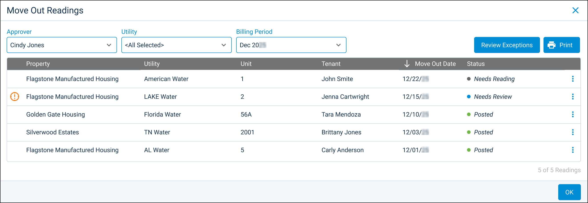

Source: https://rmxhelp.rentmanager.com/Topics/Express/CSH/MU-Move-Out-Readings.htm
Move Out Readings (Pop-Up)
Meter readings for tenant move-outs are readily available for review and approval when an action is needed or to access historical data on the unit and its associated utility. The Move Out Readings pop-up displays information on each off-cycle meter reading with a Move Out reading type for the selected billing period or utility.
Related Privileges
| Group | Privilege | Column |
|---|---|---|
| Utilities | Metered utilities | Enabled |
For more information, refer to Control User Access.
To view your move-out meter readings, go to  arrow_forward Services arrow_forward Metered Utilities arrow_forward Meter Readings Statuses. Then, on the top right of the page, click View Move Out Readings.
arrow_forward Services arrow_forward Metered Utilities arrow_forward Meter Readings Statuses. Then, on the top right of the page, click View Move Out Readings.
More Information
In order to access the Meter Reading Statuses page, you must be a reviewer or approver for an enabled meter exception approval workflow. For more information, refer to Manage Metered Utilities High/Low Settings.

Filter Options
The following filter options are available:
| Option | Description |
|---|---|
|
Approver |
The user responsible for approving the move-out meter readings. If you are assigned as a reviewer for this approval workflow rather than an approver, this option does not display. |
|
Billing Period |
The month and year for which to display move-out meter readings. By default, the most recent billing period displays. |
|
Utility |
The utility you wish to review the move-out meter readings for. |
Columns Descriptions
The following columns available in this pop up are described below:
| Column | Description |
|---|---|
|
Move Out Date |
The date the tenant moved out of the unit as it displays on the tenant's details page in the Leases tile's Move Out field. |
|
Property |
The name of the property associated with the move-out meter reading. |
|
Status |
The current state of the move-out meter reading (e.g., Needs Approval, Approved - Ready to Post). |
|
Tenant |
The name of the tenant associated with the move-out meter reading. |
|
Unit |
The name of the unit associated with the move-out meter reading. |
|
Utility |
The name of the utility that is associated with the move-out meter reading. |
Row Actions
Depending on the reading batch's status and whether you are a reviewer or approver, selecting  arrow_forward Details displays one of the following pages:
arrow_forward Details displays one of the following pages:
| Status | Description |
|---|---|
|
Approved - Ready to Post |
Opens the Meter Readings page in a new tab with the batch's property and utility selected. Readings can be posted from there. |
|
Needs Approval |
Opens the Meter Exceptions page in a new tab. For reviewers, this page is read-only. Approvers can select an approval status for exceptions. |
|
Needs Conditional Approval |
Opens the Meter Exception Details pop-up in a new tab. For reviewers, this page is read-only. Conditional approvers can select a conditional approval status. Final approvers cannot make changes to this page until conditional approvers add a conditional approval status. This option displays only for two-step approval workflows. |
|
Needs Final Approval |
Opens the Meter Exception Details pop-up in a new tab. For reviewers and conditional approvers, this page is read-only. Final approvers can select a final approval status. This option displays only for two-step approval workflows. |
|
Needs Reading |
Opens the Meter Readings page in a new tab with the batch's property and utility selected. You can enter the reading for the meter from there. |
|
Needs Review |
Opens the Meter Exception Details pop-up in a new tab. Reviewers can select reasons for each exception. Approvers cannot make changes to this page until reviewers add exception reasons. |
|
Posted |
Opens the View Consumption History pop-up for the corresponding unit and utility selected. To roll back the posted utility charge for this move-out reading, click |
|
Rejected - Needs Follow Up |
Opens the Meter Exception Details pop-up in a new tab. Reviewers and approvers can view information on the rejection and determine the steps needed for a follow-up. |